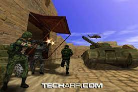

What Team Fortress 2 Provides to its Players
HOW IT BEGAN
Click on arrow below


As a free mod for the 1996 PC game Quake, the original Firm Fortress was created by the Australian team TF Software, made up of Robin Walker and John Cook. Walker and Cook worked for Valve in 1998, the year Half-Life, the company's debut game, was launched. With the end of the year as the target release date, Valve started working on Team Fortress 2 as a Half-Life expansion pack. Team Fortress Classic, a version of the original Team Fortress, was made available by Valve as a free Half-Life mod in 1999.To demonstrate the adaptability of the Half-Life software development kit to the public and business, Team Fortress Classic was created utilizing it.
Unlike Team Fortress, Team Fortress 2 was initially intended to have a current battle aesthetic. It would include novel elements including networked voice communication, a command hierarchy with a Commander class, and parachute drops over hostile terrain. The Commander class operated like a real-time strategy game, with the player controlling players and AI-controlled forces while looking down on the action from above. At E3 1999, Valve debuted new technologies like multi-resolution mesh technology from Intel, which dynamically reduced the detail of far-off on-screen elements to improve performance, and parametric animation, which combined animations for smoother, more lifelike movement. Team Fortress 2 was also the first game to use these new technologies. Numerous accolades for the game were received, including Best Online Game and Best Action Game.